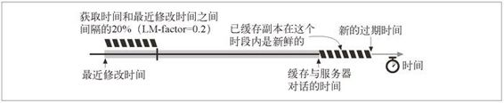

7.9 控制缓存的能力
服务器可以通过 HTTP 定义的几种方式来指定在文档过期之前可以将其缓存多长时间。按照优先级递减的顺序，服务器可以：
附加一个 Cache-Control: no-store 首部到响应中去；
附加一个 Cache-Control: no-cache 首部到响应中去；
附加一个 Cache-Control: must-revalidate 首部到响应中去；
附加一个 Cache-Control: max-age 首部到响应中去；
附加一个 Expires 日期首部到响应中去；
不附加过期信息，让缓存确定自己的过期日期。
本节描述了缓存控制首部。下一节，也就是 7.10 节介绍了如何为不同的内容分配不同的缓存信息。
7.9.1 no-Store 与 no-Cache 响应首部
HTTP/1.1 提供了几种限制对象缓存，或限制提供已缓存对象的方式，以维持对象的新鲜度。no-store 首部和 no-cache 首部可以防止缓存提供未经证实的已缓存对象：
Pragma: no-cache
Cache-Control: no-store
Cache-Control: no-cache
标识为 no-store 的响应会禁止缓存对响应进行复制。缓存通常会像非缓存代理服务器一样，向客户端转发一条 no-store 响应，然后删除对象。
标识为 no-cache 的响应实际上是可以存储在本地缓存区中的。只是在与原始服务器进行新鲜度再验证之前，缓存不能将其提供给客户端使用。这个首部使用 do-not-serve-from-cache-without-revalidation 这个名字会更恰当一些。
HTTP/1.1 中提供 Pragma: no-cache 首部 1 是为了兼容于 HTTP/1.0+。除了与只理解 Pragma: no-cache 的 HTTP/1.0 应用程序进行交互时，HTTP 1.1 应用程序都应该使用 Cache-Control: no-cache。
1 从技术上来讲，Pragma:no-cache 首部只能用于 HTTP 请求，但在实际中它作为扩展首部已被广泛地用于 HTTP 请求和响应之中。
7.9.2 max-age 响应首部
Cache-Control: max-age 首部表示的是从服务器将文档传来之时起，可以认为此文档处于新鲜状态的秒数。还有一个 s-maxage 首部（注意 maxage 的中间没有连字符），其行为与 max-age 类似，但仅适用于共享（公有）缓存：
Cache-Control: max-age=3600
Cache-Control: s-maxage=3600
服务器可以请求缓存不要缓存文档，或者将最大使用期设置为零，从而在每次访问的时候都进行刷新：
Cache-Control: max-age=0
Cache-Control: s-maxage=0
7.9.3 Expires 响应首部
不推荐使用 Expires 首部，它指定的是实际的过期日期而不是秒数。HTTP 设计者后来认为，由于很多服务器的时钟都不同步，或者不正确，所以最好还是用剩余秒数，而不是绝对时间来表示过期时间。可以通过计算过期值和日期值之间的秒数差来计算类似的新鲜生存期：
Expires: Fri, 05 Jul 2002, 05:00:00 GMT
有些服务器还会回送一个 Expires:0 响应首部，试图将文档置于永远过期的状态，但这种语法是非法的，可能给某些软件带来问题。应该试着支持这种结构的输入，但不应该产生这种结构的输出。
7.9.4 must-revalidate 响应首部
可以配置缓存，使其提供一些陈旧（过期）的对象，以提高性能。如果原始服务器希望缓存严格遵守过期信息，可以在原始响应中附加一个 Cache-Control: must-revalidate 首部。
Cache-Control: must-revalidate
Cache-Control: must-revalidate 响应首部告诉缓存，在事先没有跟原始服务器进行再验证的情况下，不能提供这个对象的陈旧副本。缓存仍然可以随意提供新鲜的副本。如果在缓存进行 must-revalidate 新鲜度检查时，原始服务器不可用，缓存就必须返回一条 504 Gateway Timeout 错误。
7.9.5 试探性过期
如果响应中没有 Cache-Control: max-age 首部，也没有 Expires 首部，缓存可以计算出一个试探性最大使用期。可以使用任意算法，但如果得到的最大使用期大于 24 小时，就应该向响应首部添加一个 Heuristic Expiration Warning（试探性过期警告，警告 13）首部。据我们所知，很少有浏览器会为用户提供这种警告信息。
LM-Factor 算法是一种很常用的试探性过期算法，如果文档中包含了最后修改日期，就可以使用这种算法。LM-Factor 算法将最后修改日期作为依据，来估计文档有多么易变。算法的逻辑如下所示。
如果已缓存文档最后一次修改发生在很久以前，它可能会是一份稳定的文档，不太会突然发生变化，因此将其继续保存在缓存中会比较安全。
如果已缓存文挡最近被修改过，就说明它很可能会频繁地发生变化，因此在与服务器进行再验证之前，只应该将其缓存很短一段时间。
实际的 LM-Factor 算法会计算缓存与服务器对话的时间跟服务器声明文档最后被修改的时间之间的差值，取这个间隔时间的一部分，将其作为缓存中的新鲜度持续时间。下面是 LM-factor 算法的 Perl 伪代码：
$time_since_modify = max(0, $server_Date - $server_Last_Modified);
$server_freshness_limit = int($time_since_modify * $lm_factor);
图 7-16 以图形方式给出了 LM-factor 的新鲜周期。图中用交叉线画出的阴影表示的是将 LM-factor 设置为 0.2 计算出的新鲜周期。

图 7-16 用 LM-factor 算法计算新鲜周期
通常人们会为试探性新鲜周期设置上限，这样它们就不会变得太大了。尽管比较保守的站点会将这个值设置为一天，但通常站点会将其设置为一周。
如果最后修改日期也没有的话，缓存就没什么信息可利用了。缓存通常会为没有任何新鲜周期线索的文档分配一个默认的新鲜周期（通常是一个小时或一天）。有时，比较保守的缓存会将这种试探性新鲜生存期设置为 0，强制缓存在每次将其提供给客户端之前，都去验证一下这些数据仍然是新鲜的。
与试探性新鲜计算有关的最后一点是——它们可能比你想象的要常见得多。很多原始服务器仍然不会产生 Expires 和 max-age 首部。选择缓存过期的默认时间时要特别小心！
7.9.6 客户端的新鲜度限制
Web 浏览器都有 Refresh（刷新）或 Reload（重载）按钮，可以强制对浏览器或代理缓存中可能过期的内容进行刷新。Refresh 按钮会发布一个附加了 Cache-Control 请求首部的 GET 请求，这个请求会强制进行再验证，或者无条件地从服 务器获取文档。Refresh 的确切行为取决于特定的浏览器、文档以及拦截缓存的配置。
客户端可以用 Cache-Control 请求首部来强化或放松对过期时间的限制。有些应用程序对文档的新鲜度要求很高（比如人工刷新按钮），对这些应用程序来说，客户端可以用 Cache-Control 首部使过期时间更严格。另一方面，作为提高性能、可靠性或开支的一种折衷方式，客户端可能会放松新鲜度要求。表 7-4 对 Cache-Control 请求指令进行了总结。
表7-4 Cache-Control请求指令
| 指 令 | 目 的 |
|---|---|
| Cache-Control: max-stale Cache-Control: max-stale = <s> | 缓存可以随意提供过期的文件。如果指定了参数<s> ，在这段时间内，文档就不能过期。这条指令放松了缓存的规则 |
| Cache-Control: min-fresh=<s> | 至少在未来<s> 秒内文档要保持新鲜。这就使缓存规则更加严格了 |
| Cache-Control: max-age = <s> | 缓存无法返回缓存时间长于<s> 秒的文档。这条指令会使缓存规则更加严格，除非同时还发送了max-stale 指令，在这种情况下，使用期可能会超过其过期时间 |
| Cache-Control: no-cache Pragma: no-cache | 除非资源进行了再验证，否则这个客户端不会接受已缓存的资源 |
| Cache-Control: no-store | 缓存应该尽快从存储器中删除文档的所有痕迹，因为其中可能会包含敏感信息 |
| Cache-Control: only-if-cached | 只有当缓存中有副本存在时，客户端才会获取一份副本 |
7.9.7 注意事项
文档过期系统并不是一个完美的系统。如果发布者不小心分配了一个很久之后的过期日期，在文档过期之前，她要对文档做的任何修改都不一定能显示在所有缓存中。2
2 文档过期采用了“生存时间”技术，这种技术用于很多因特网协议，比如 DNS 中。与 HTTP 一样，如果发布了一个很久之后才到时的过期日期，然后发现需要进行修改，DNS 就会遇到麻烦。但是，与 DNS 不同的是，HTTP 为客户端提供了一些覆盖和强制重载机制。
因此，很多发布者都不会使用很长的过期日期。而且，很多发布者甚至都不使用过期日期，这样缓存就很难确定文档会在多长时间内保持新鲜了。